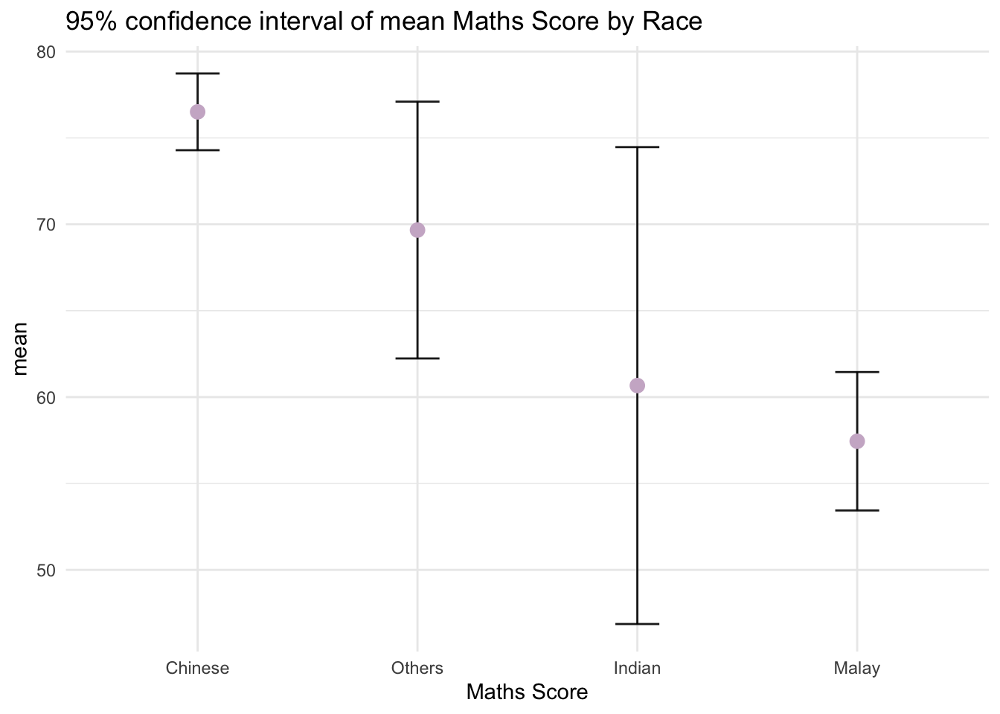

pacman::p_load(tidyverse, ungeviz, DT, crosstalk, plotly)Univariate Graphical Methods for Uncertainty
1. Learning Objectives
- Visualise uncertainty using
ungevizpackage
2. Load Packages
tidyverseis a family of R packages designed to support data science, analysis and communication task including creating static statistical graphsungevizprovide functionality forggplot2to visualize uncertainty. The package name comes from the German word “Ungewissheit”, which means uncertainty.crosstalkputs HTML elements side by sideplotlycreates customized interactive plots
3. Import Data
exam_data is a year end examination grades of a cohort of Primary 3 students from a local school.
exam_data <- read.csv("data/Exam_data.csv")
glimpse(exam_data)Rows: 322
Columns: 7
$ ID <chr> "Student321", "Student305", "Student289", "Student227", "Stude…
$ CLASS <chr> "3I", "3I", "3H", "3F", "3I", "3I", "3I", "3I", "3I", "3H", "3…
$ GENDER <chr> "Male", "Female", "Male", "Male", "Male", "Female", "Male", "M…
$ RACE <chr> "Malay", "Malay", "Chinese", "Chinese", "Malay", "Malay", "Chi…
$ ENGLISH <int> 21, 24, 26, 27, 27, 31, 31, 31, 33, 34, 34, 36, 36, 36, 37, 38…
$ MATHS <int> 9, 22, 16, 77, 11, 16, 21, 18, 19, 49, 39, 35, 23, 36, 49, 30,…
$ SCIENCE <int> 15, 16, 16, 31, 25, 16, 25, 27, 15, 37, 42, 22, 32, 36, 35, 45…4. Uncertainty of Point Estimates
A point estimate is a statistic, such as a mean, used to estimate the value of an unknown parameter of a population.
Uncertainty in a point estimate refers to the recognition that the calculated value, which is an estimate derived from a sample, may not precisely reflect the true population parameter.
Quantification of uncertainty:
Confidence intervals are often used to provide a range of values, constructed from the data, that is likely to contain the true population parameter.
Standard error measures the dispersion of the sampling distribution of the point estimate. A smaller standard error indicates less variability and hence less uncertainty in the point estimate.
Other aspects that contribute to uncertainty in a point estimate:
- Sample size
- Model assumptions on linearity, normality and homoscedasticity
group_by() of dplyr package groups the observation by RACE, summarise() compute the count of observations, mean, standard deviation. mutate() derive standard error of Maths by RACE, and the output is save as a tibble data table called my_sum.
my_sum <- exam_data %>%
group_by(RACE) %>%
summarise(n=n(),
mean=mean(MATHS),
sd=sd(MATHS)) %>%
mutate(se=sd/sqrt(n-1))
glimpse(my_sum)Rows: 4
Columns: 5
$ RACE <chr> "Chinese", "Indian", "Malay", "Others"
$ n <int> 193, 12, 108, 9
$ mean <dbl> 76.50777, 60.66667, 57.44444, 69.66667
$ sd <dbl> 15.69040, 23.35237, 21.13478, 10.72381
$ se <dbl> 1.132357, 7.041005, 2.043177, 3.791438We can view my_sum tibble data frame in an html table format using kable() from DT package.
knitr::kable(head(my_sum), format = 'html')| RACE | n | mean | sd | se |
|---|---|---|---|---|
| Chinese | 193 | 76.50777 | 15.69040 | 1.132357 |
| Indian | 12 | 60.66667 | 23.35237 | 7.041005 |
| Malay | 108 | 57.44444 | 21.13478 | 2.043177 |
| Others | 9 | 69.66667 | 10.72381 | 3.791438 |
4.1 Standard Error
We will plot the standard error bars of mean Maths Score by RACE. The error bars are computed by using the arguments ymin and ymax with formula mean+/-se. For geom_point(), it is important to indicate stat = “identity”.
ggplot(my_sum) +
geom_errorbar(aes(x=RACE, ymin=mean-se, ymax=mean+se),
width=0.2,
colour="black",
alpha=0.9,
size=0.5) +
geom_point(aes(x=RACE, y=mean),
stat="identity",
color="hotpink2",
size = 3,
alpha=1) +
ggtitle("Standard Error of mean Maths Score by Race")+
theme_minimal()
4.2 Confidence Interval
We can also plot the confidence intervals of mean Maths Score by RACE. The confidence intervals are computed by using the formula **mean+/-1.96*se**. The error bars are sorted by using the average maths scores.
Tip
In probability and statistics, the 97.5th percentile point of the standard normal distribution is an approximate value of 1.96, where 95% of the area under a normal curve lies within approximately 1.96 standard deviations of the mean.
If X has a standard normal distribution, i.e. X ~ N(0,1),
P(X > 1.96) ≈ 0.025 P(X < 1.96) ≈ 0.975
and as the normal distribution is symmetric,
P(−1.96 < X < 1.96) ≈ 0.95.
ggplot(my_sum) +
geom_errorbar(aes(x = reorder(RACE, -mean), ymin = mean-1.96*se, ymax = mean+1.96*se),
width = 0.2,
colour = "black",
alpha = 0.9,
size = 0.5)+
geom_point(aes(x = RACE, y = mean),
stat = "identity",
color = "thistle3",
size = 3,
alpha = 1) +
labs(x = "Maths Score",
title = "95% confidence interval of mean Maths Score by Race")+
theme_minimal()
Interactive Error Bars
We will plot interactive error bars for the 99% confidence interval of mean Maths Score by Race.
Need plotly and bscols neeed crosstalk bscols: Arrange HTML elements or widgets in Bootstrap columns
# shared_df = SharedData$new(my_sum)
bscols(widths = c(4,8),
ggplotly((ggplot(my_sum) +
geom_errorbar(aes(
x=reorder(RACE, -mean),
ymin=mean-2.58*se,
ymax=mean+2.58*se),
width=0.2,
colour="black",
alpha=0.9,
size=0.5) +
geom_point(aes(
x=RACE,
y=mean,
text = paste("Race:", `RACE`,
"<br>N:", `n`,
"<br>Avg. Scores:", round(mean, digits = 2),
"<br>95% CI:[",
round((mean-2.58*se), digits = 2), ",",
round((mean+2.58*se), digits = 2),"]")),
stat="identity",
color="red",
size = 1.5,
alpha=1) +
xlab("Race") +
ylab("Average Scores") +
theme_minimal() +
theme(axis.text.x = element_text(
angle = 45, vjust = 0.5, hjust=1)) +
ggtitle("99% Confidence interval of average /<br>maths scores by race")),
tooltip = "text"),
DT::datatable(my_sum,
rownames = FALSE,
class="compact",
width="100%",
options = list(pageLength = 10,
scrollX=T),
colnames = c("No. of pupils",
"Avg Scores",
"Std Dev",
"Std Error")) %>%
formatRound(columns=c('mean', 'sd', 'se'),
digits=2)):::
7.2 ggdist
exam_data %>%
ggplot(aes(x = RACE,
y = MATHS)) +
stat_pointinterval() +
labs(
title = "Visualising confidence intervals of mean math score",
subtitle = "Mean Point + Multiple-interval plot")Error in stat_pointinterval(): could not find function "stat_pointinterval"exam_data %>%
ggplot(aes(x = RACE, y = MATHS)) +
stat_pointinterval(.width = 0.95,
.point = median,
.interval = qi) +
labs(
title = "Visualising confidence intervals of median math score",
subtitle = "Median Point + Multiple-interval plot")Error in stat_pointinterval(.width = 0.95, .point = median, .interval = qi): could not find function "stat_pointinterval"exam_data %>%
ggplot(aes(x = RACE,
y = MATHS)) +
stat_pointinterval(
show.legend = FALSE) +
labs(
title = "Visualising confidence intervals of mean math score",
subtitle = "Mean Point + Multiple-interval plot")Error in stat_pointinterval(show.legend = FALSE): could not find function "stat_pointinterval"exam_data %>%
ggplot(aes(x = RACE,
y = MATHS)) +
stat_gradientinterval(
fill = "skyblue",
show.legend = TRUE
) +
labs(
title = "Visualising confidence intervals of mean math score",
subtitle = "Gradient + interval plot")Error in stat_gradientinterval(fill = "skyblue", show.legend = TRUE): could not find function "stat_gradientinterval"7.2 Hypothetical Outcome Plots
transition_states() from gganimate
ggplot(data = exam_data,
(aes(x = factor(RACE), y = MATHS))) +
geom_point(position = position_jitter(
height = 0.3, width = 0.05),
size = 0.4, color = "#0072B2", alpha = 1/2) +
geom_hpline(data = sampler(25, group = RACE), height = 0.6, color = "#D55E00") +
theme_bw() +
# `.draw` is a generated column indicating the sample draw
transition_states(.draw, 1, 3)Error in transition_states(.draw, 1, 3): could not find function "transition_states"10. Reference
ungeviz: https://github.com/wilkelab/ungeviz